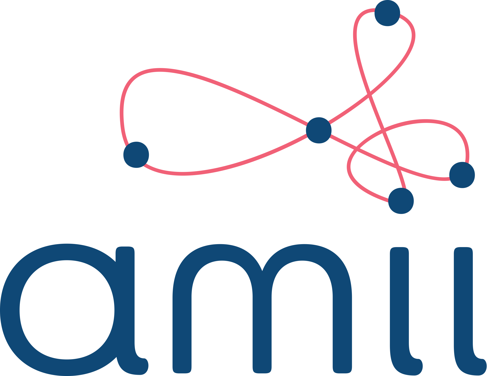

Habibur Rahman
Graduate Research Assistant Fellow
Lelis Research Group
Alberta Machine Intelligence Institute (amii)
Department of Computing Science (CS)
University of Alberta
Edmonton, AB, Canada
Email: habibur [at] ualberta [dot] ca
[bd] [habib] [94] [at] gmail [dot] com
I am working as a Graduate Research Assistant at the University of
Alberta. Prior to join UofA, I have served as a Software Engineer in Samsung R&D Institute Bangladesh Limited (SRBD),
Dhaka, Bangladesh, Lecturer in the Department of Computer Science and Engineering in the University of Information Technology and Sciences (UITS), and
Programming Contest Mentor at UITS Computer
Club.
I completed my Bachelors in Computer Science and Engineering in 2017 from Rajshahi University of Engineering and Technology (RUET),
Rajshahi, Bangladesh.
My research interests lie in the area of Program Synthesis, and Machine Learning.
Notice I am currently open to work as a Machine Learning Engineer, Software Engineer or Data Scientist from May 2023.
Experiences

Graduate Research Assistant FellowMay
2021 -- Present
Alberta Machine Intelligence Institute | University of
AlbertaEdmonton, Alberta, Canada
- Reduced the runtime of existing methods by 10% in program synthesis by using simulated annealing and graph neural network
Graduate Teaching AssistantWinter 2021
and Fall 2021
Course:
CMPUT 201
University of Alberta Edmonton, Alberta, Canada
- Led an undergrad lab section for the Practical Programming Methodology course by preparing lab marking scripts, evaluating submissions, and helping students solve exercise problems

Software EngineerJuly 2019 - Dec
2020
Windows Team
Samsung R&D Institute (SRBD)Dhaka, Bangladesh
- Developed an internal automation tool to convert the Android localization strings for the Windows platform that reduced the string processing time from 120 minutes to 120 seconds
- Developed the new tag feature for Samsung Notes V3.X and up from concept

LecturerJanurary 2018 - June
2019
Department of Computer Science and
Engineering
University of Information Technology and Sciences (UITS)Dhaka, Bangladesh
- Redesigned the courses by including programming problems to improve their problem-solving skills
Programming Contest MentorJanurary
2018 - June 2019
UITS Computer Club
University of Information Technology and Sciences (UITS)Dhaka, Bangladesh
UITS Computer Club
University of Information Technology and Sciences (UITS)Dhaka, Bangladesh
- Prepared the university teams to attend national and international level programming contests conducting sessions and hosting programming contests
Projects
Synthesizing High Quality Programs Using Guided Bottom-Up Search
Dec 2021 -- Present
- Implemented a novel approach to augmenting DSL to generate high - quality programs to ensure efficient computation time and minimize memory consumption.
- Implemented a novel approach of guiding bottom - up search to synthesize code for drawing from any input image.
Debiasing Multiclass Demographics in Language ModelsSep 2021 -- Dec 2021
- Implemented a new regularizer to debias multiclass demographics in language models which reduced the biases by 3% for several individual classes within a demographic.
- Contributed a word list for 4 demographics where each of the single demographics consists of 6 classes to evaluate the fairness of language models.
How is Testing Related to Single Statement Bugs? Jan 2021 -- Apr 2021
- Predicted a weak to moderate correlation (r-value 0.40) between test coverage and single statement bugs by evaluating 25 open-source maven based java projects.
- Suggested adding more unit tests and increasing the test coverage to mitigate the single statement bugs by at least 10%.